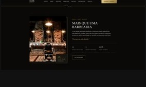
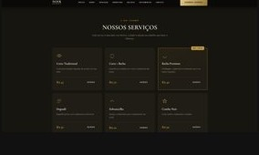
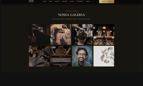

Barbershop / Premium
Noir Barber
Uma experiência digital para posicionar uma barbearia premium com presença forte, serviços claros e uma jornada de contato objetiva.

O problema
A marca precisava parecer premium desde o primeiro contato e, ao mesmo tempo, deixar serviços, equipe e formas de agendamento fáceis de encontrar.
Posicionamento, serviços, equipe, galeria e contato. foi tratado como parte da arquitetura da página, não como um detalhe no fim da experiência.
A estrutura foi organizada para criar hierarquia, reduzir ruído e conduzir o visitante até a próxima ação com o mínimo de fricção.
- 01Direção visual
- 02Arquitetura de conteúdo
- 03Responsividade
- 04Conversão


Construção
A direção combina fotografia, contraste e hierarquia tipográfica. A estrutura organiza identidade, serviços, equipe, galeria e contato em uma experiência contínua.
O objetivo foi transformar uma ideia de negócio em uma interface clara, responsiva e coerente com o posicionamento da marca.
O resultado é uma experiência que pode ser entendida rapidamente, funciona em telas menores e mantém uma linguagem visual consistente do primeiro ao último bloco.